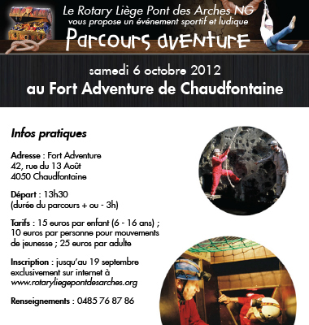

La paix
par
le service
6 octobre 2012
Le Rotary Liège Pont des Arches NG vous propose un événement sportif et ludique Un parcours aventure au Fort Adventure de Chaudfontaine Dans une atmosphère mystérieuse et envoutante, partez à la conquête du trésor caché du Fort Aventure; Eclairage à la bougie, fumigènes, effets lumineux et sonores contribuent à magnifier le décor envoûtant du Fort de Chaudfontaine. Sans parler des personnages de légende qui semblent tout droit sortis de vos rêves héroïques...ou de vos pires cauchemars ... Mais attention, car votre parcours sera plein d'épreuves que vous devrez surmonter! Etes-vous prêts à relever le défi? Bar et possibilité de restauration (pain/saucisse) tout au long de l’activité Tarifs : 15 euros par enfant (6 - 16 ans) - 25 euros par adulte - 10 euros par personne membre d'un mouvements de jeunesse ; Inscription : jusqu’au 29 septembre Renseignement : 0485 76 87 86
S'inscrire6 octobre 2012
Le Rotary Liège Pont des Arches NG vous propose un événement sportif et ludique Un parcours aventure au Fort Adventure de Chaudfontaine Dans une atmosphère mystérieuse et envoutante, partez à la conquête du trésor caché du Fort Aventure; Eclairage à la bougie, fumigènes, effets lumineux et sonores contribuent à magnifier le décor envoûtant du Fort de Chaudfontaine. Sans parler des personnages de légende qui semblent tout droit sortis de vos rêves héroïques...ou de vos pires cauchemars ... Mais attention, car votre parcours sera plein d'épreuves que vous devrez surmonter! Etes-vous prêts à relever le défi? Bar et possibilité de restauration (pain/saucisse) tout au long de l’activité Tarifs : 15 euros par enfant (6 - 16 ans) - 25 euros par adulte - 10 euros par personne membre d'un mouvements de jeunesse ; Inscription : jusqu’au 29 septembre Renseignement : 0485 76 87 86
S'inscrire